Archiving city Project - Part 1
This is one of the assignments done for the course “Interrogating the Archive: Preserving and Interpreting Knowledges of the Past” I took during my Master’s. It kinda serves as a trivia of Helsinki’s city, and a travel guide for history nerds looking for off-the-beaten-track ways to look at Helsinki. And one of the most enjoyable assignment I did during the 2 years.
Special Thanks to Juhana Aunesluoma (University of Helsinki), Mary Jo Maynes (University of Minnesota), Leslie Morris (University of Minnesota), and Hilde Hoffmann (Ruhr-University Bochum, for hosting the tri-university seminar, and all the fellow students in the course that made the inquiry so much more fun.
The first bit is about “Silent history within the cityscape”. Mostly WWII related memorials, and non-memorials that tells certain stories, but in a subtle volume.
Helsinki Air Raid
Although Helsinki is deep behind the actual frontlines in WWII, the destruction extended to central Helsinki as well. Although much of the signs are not seen, there are traces of it spreading around the university City Centre campus. Except for the last two, they are not a documented memorial for air raid. They all exist in plain sight, but not many remembers the air raid from these places or objects.
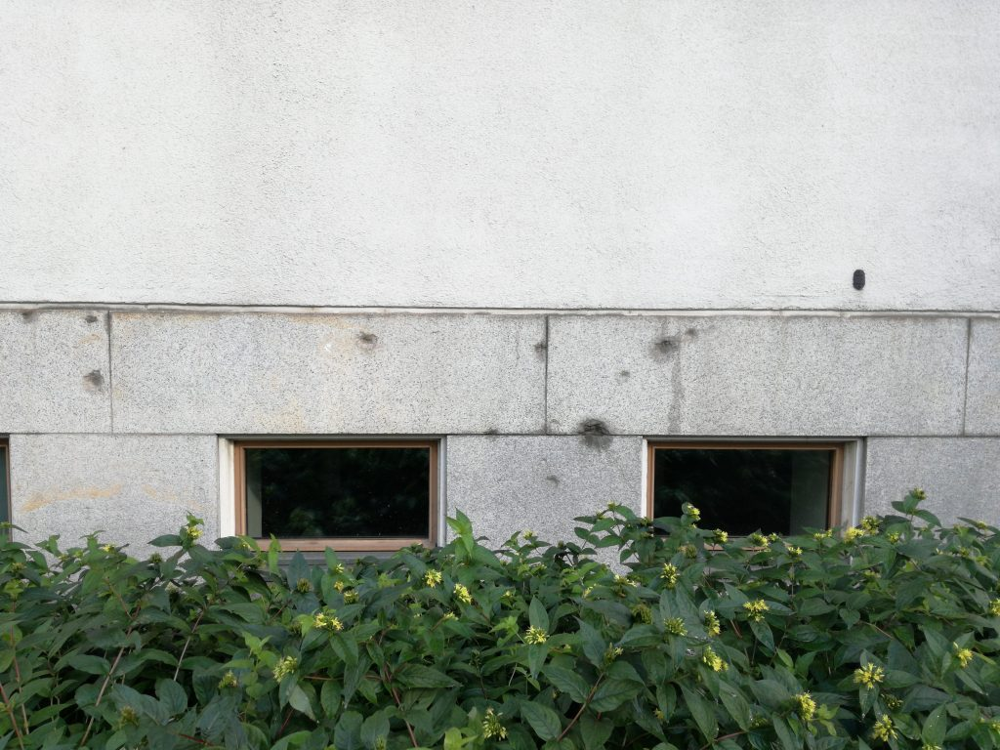
Exterior of Metsätalo building, with visible mark left by machinegun fire
For me, first encounter with the air raid was this very foundation of our university building, Metsatalo. As the name, it was first built in 1939 as a forestry studies building (now in northern Viikki campus). The marks of machinegun rounds are still very visible on the southern side of the building.
-
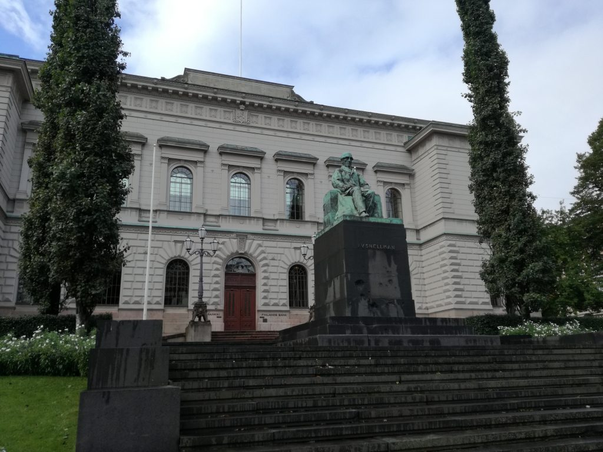
Snellman Statue in front of Suomen Pankki
-
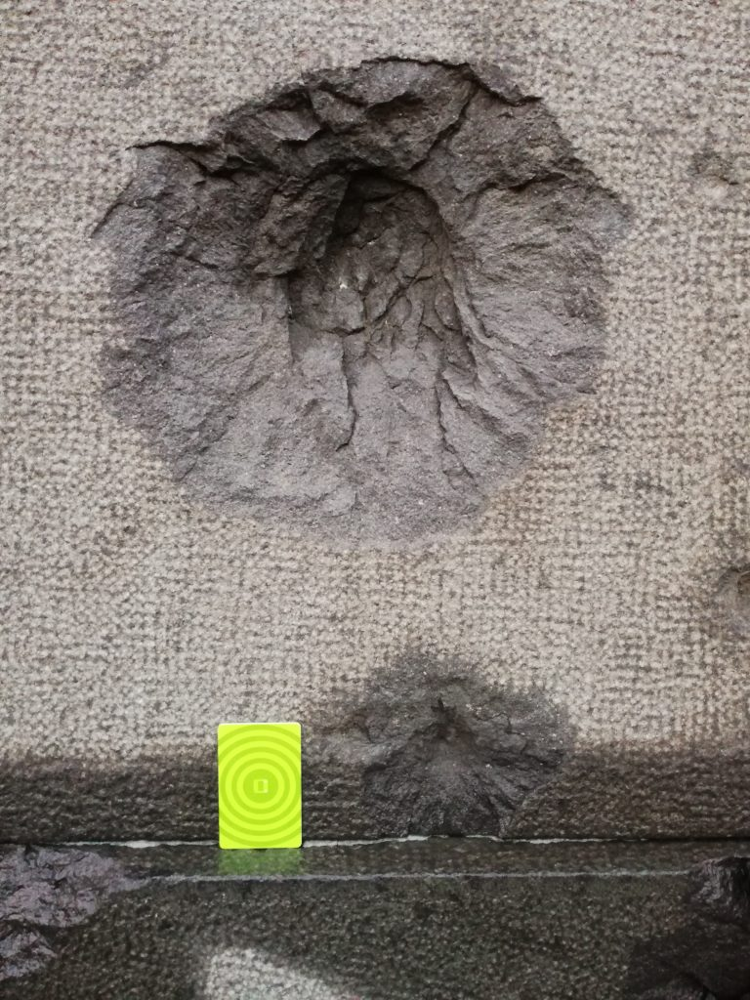
One of several marks on the pedestal, a HSL travel card for comparison. Likely a large-caliber cannon fire.
Few hundred meters south of Metsatalo is the heart of the Finnish governments. In front of the Bank of Finland lies a statue of J. V. Snellman, a central figure in the rise of Finnish nation as well as Finnish economy during Grand Duchy era. This statue acts as dual layer monument such that it shows the history of the Finnish nation, but also the suffering it went through after her independence. Large dent made by Soviet autocannons are very visible on the pedestal. Intentional “preservation” of the holes show the political motive behind the dual-layer.
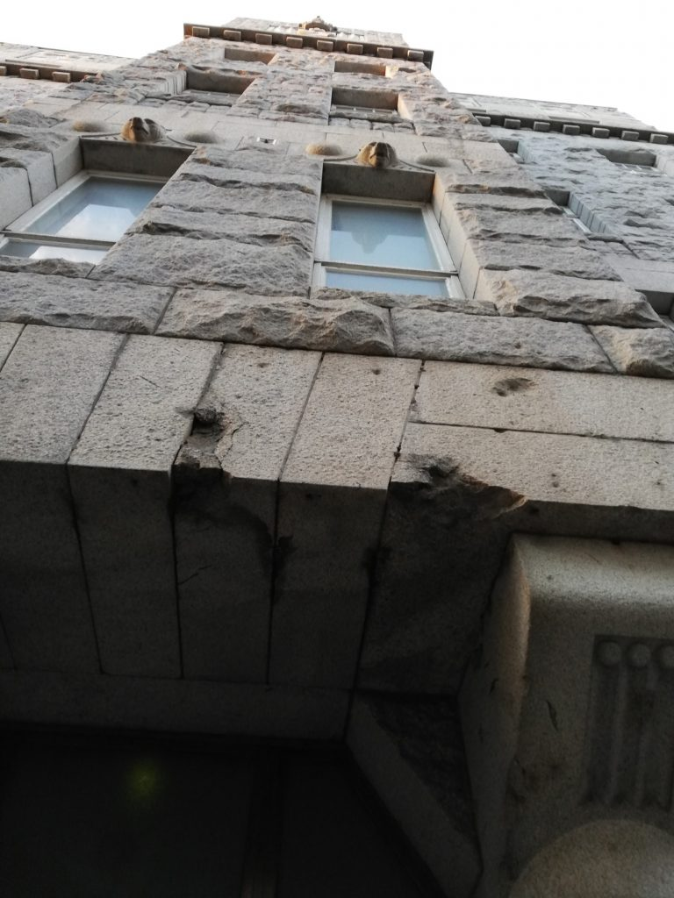
Liisankatu building
This building on Liisankatu also has marks of machinegun strafe, north-east of Metsätalo. This building is also a dual-layer monument that will be dealt with in next section. Some of these marks in the area are filled with plaster or stonework, or straight up renovated, and not much can be seen except for locations above.
Usually damages to the cityscape is repaired over the course of decades after that. Yet in Helsinki, some damages are intentionally kept and left visible to plain eyes. Maybe it’s tactical decision to praise the suffering that Finnish state went through. The survival narrative of Finnish state has been the main theme with regards to WWII, and the preservation of damages are in line with such narrative.
Difficult Past
As we studied, there are past that is difficult to tell. Savolainen’s paper really showed the the tellability of certain past memories and how it opened up recently. Niemi’s paper introduced difficulties surrounding Finnish Civil War. This section brings more context and images for such difficulty and untellable past opening up.
-
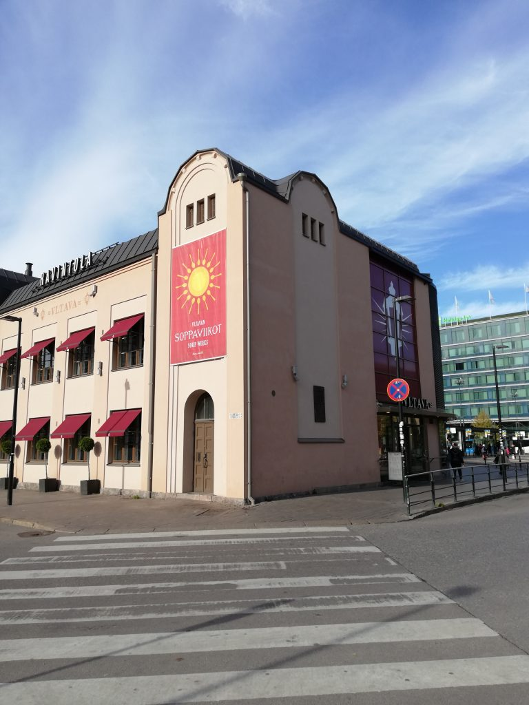
The Czech Restaurant Vltava on Elielinaukio bus terminal, next to the Central Station
-
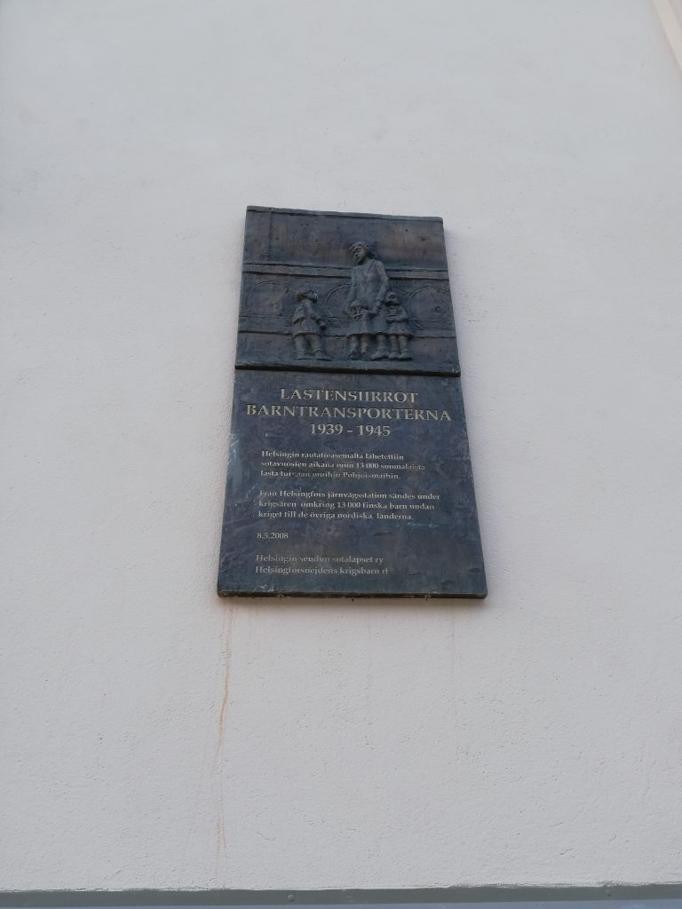
The plaque on the East side of the building
Sotalapset Muistomerkki (“War Children” memorial plaque)
Right next to the Central Railway station building on the western side has a fancy Czech restaurant, on the Eilelinaukio square bus terminal. On the side of the restaurant has a small plate, just above people’s field of vision, about the evacuation of Finnish children to other Nordic states during the war. So called “sotalapset” were voluntarily separated from their parents and sent to safe foster families in Sweden and Denmark. Though “sotalapset” was a “good” memory for most Finns, their psychological trauma was not much talked about until recently. This rather recent memorial plate can be found in other parts of Finland, mostly railway stations, as majority were transported via Tornio-Haaparanta border in the north. Though thousands pass by daily, the plate is virtually invisible to most eyes. Even more invisible when we are focused on out smartphones and looking down at the screen.
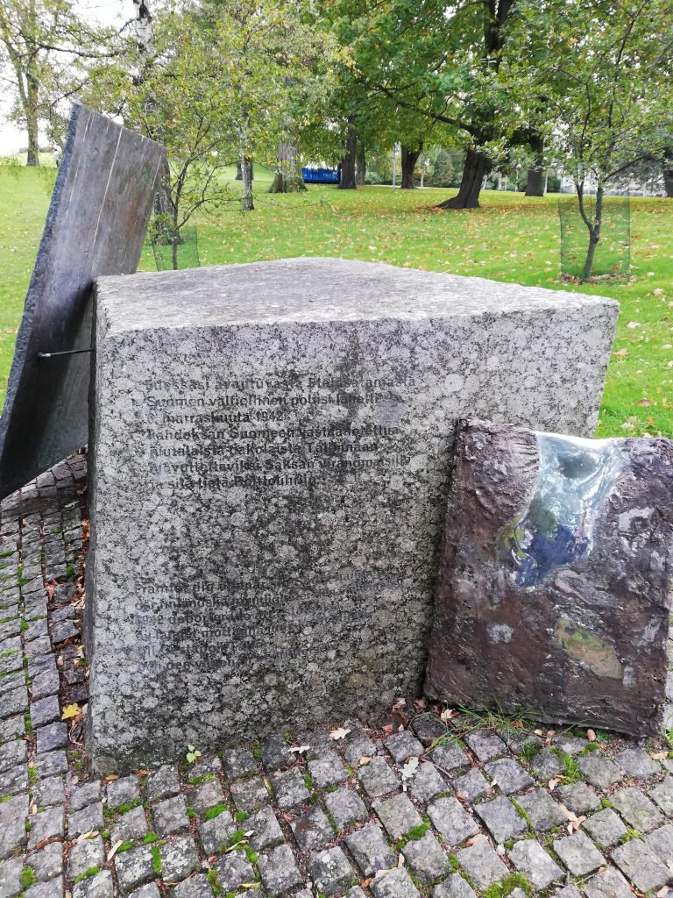
Jewish refugee memorial, in the Tähtitorninvuorenpuisto
On the hill outlooking the East Habour lies a memorial for “those eight”. During the Continuation War 1941-1944, Finnish Security Police transferred 8 Jewish refugees from Austria to Nazi authorities and shipped them to Tallinn, Estonia. All were sent to Auschwitz and perished with the exception of one. The topic has been discussed since 1980s and even gained even more popularity in 2008 with more detailed research.
The construction year of the memorial, 2000, shows the change in tellability around 1990s. But this also tells about how difficult this particular past was to remember, as it took nearly 20 years from the first spark of memory to be “set in stone” as a monument.
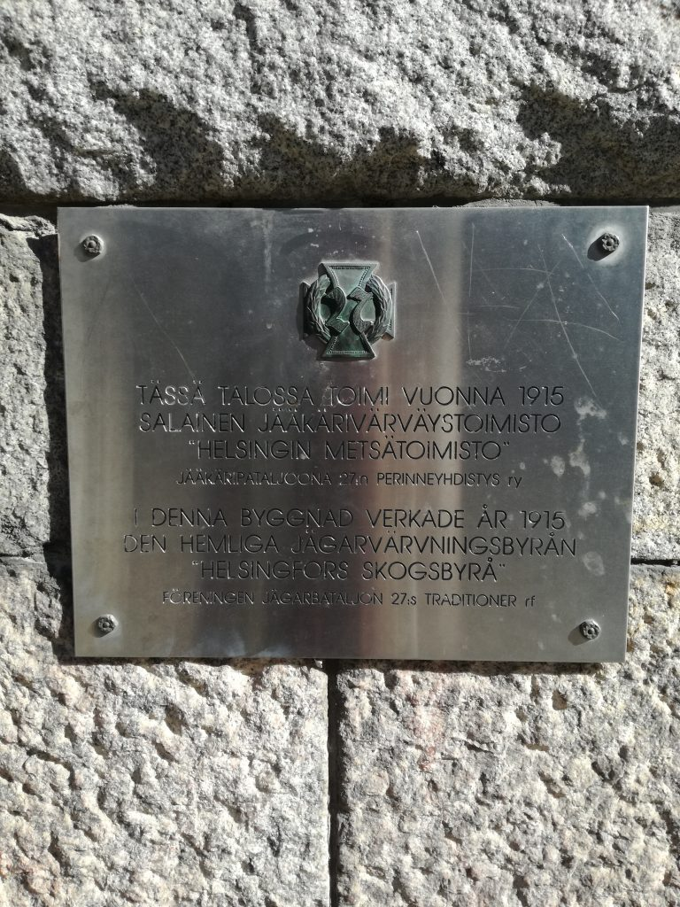
27th Jaeger battalion memorial plaque.
The building on Liisankatu 17, with marks of cannon fire, once housed an recruiting office of WWI era Finnish volunteers for German Army’s Jaeger battalion (27th Royal Prussian Jaeger Battalion), under the clandestine name of Helsinki Forestry Office. The Jaegers, mostly university students, played a significant role in the White victory of civil war, but not much traces can be seen in Helsinki except for cemeteries. This small plate tells the story of the Jaegers that were recruited from Helsinki area.
The building simultaneously represents both the heroic acts of the patriots for the Finnish nation during WWI, and the suffering Finland endured during WWII against the Soviet Union.
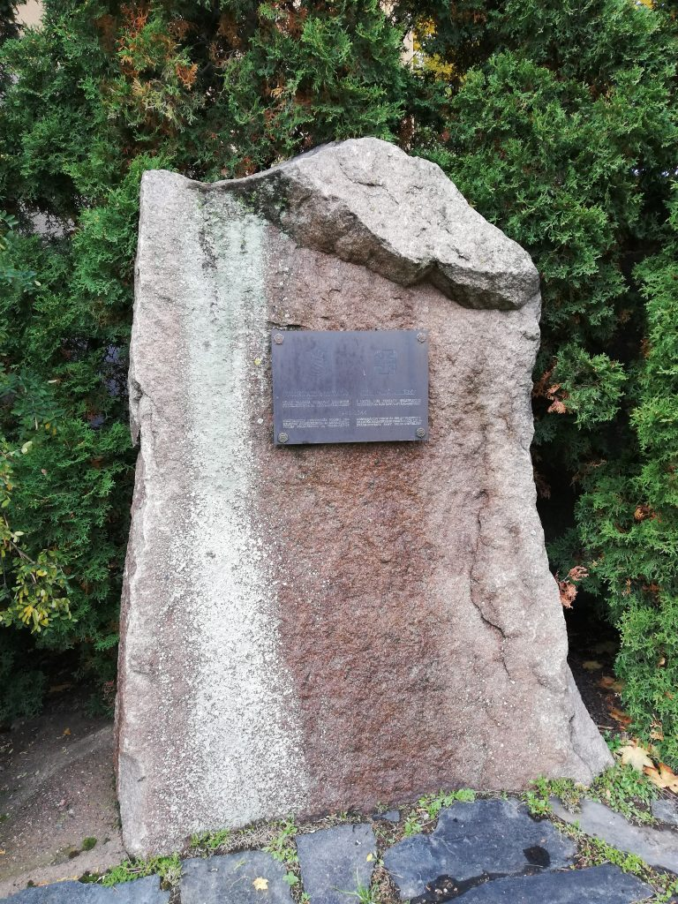
Suojeluskuntatalo memorial, Pohjoinen Hesperiankatu 15
This is quite prominent memorial sitting on Pohjoinen Hesperiankatu 15, north of Eduskunta and Natural History Museum, is very much an obscure memorial that does not appear in simple google search despite its location and appearance. This does not come up in the Helsinki Art Museum’s maps for public sculpture either, which includes many war memorials, like the Jewish refugee memorial.
-
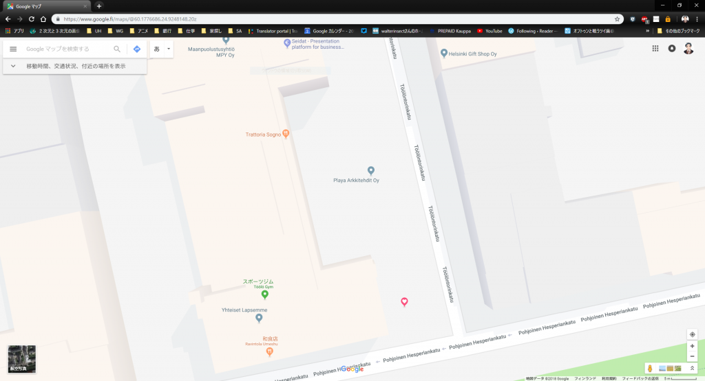
The location on the Google Maps (heart pin)
-
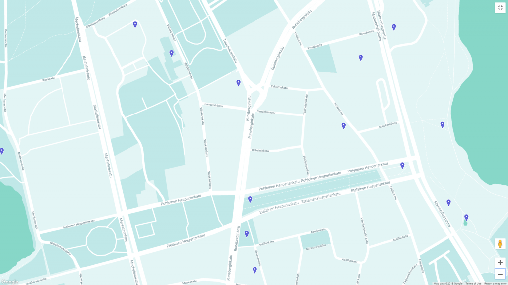
The same location on HAM map of memorials and art installations
The building behind it housed Helsinki division of Civil Guard and Lotta Svard, paramilitary organizations for civilian men and women to support of the Army, between 1941-1944. Since 1944, the organization was disbanded and banned as a Fascist organization per Moscow Peace Treaty. Their honors, service and memory was very much suppressed in much of the Cold War era. Only after the Cold War, their memories became tellable and remembered. The erection of this monument coincides with the change in tellability in 1990s.
Difficult Past remembered, silenced and told
Though difficult pasts can become tellable, such memories are not always promoted in terms of memorials, as seen in the Jaeger plates and Suojeluskuntatalo memorial. The difficult past can still continue to be left in the obscure corner of the memory, and exist only for those who remembers and cares enough to read the texts on the plate. The world might have expanded with globalization and smartphones, yet we can be very blind to the our very surroundings and history embedded in it.